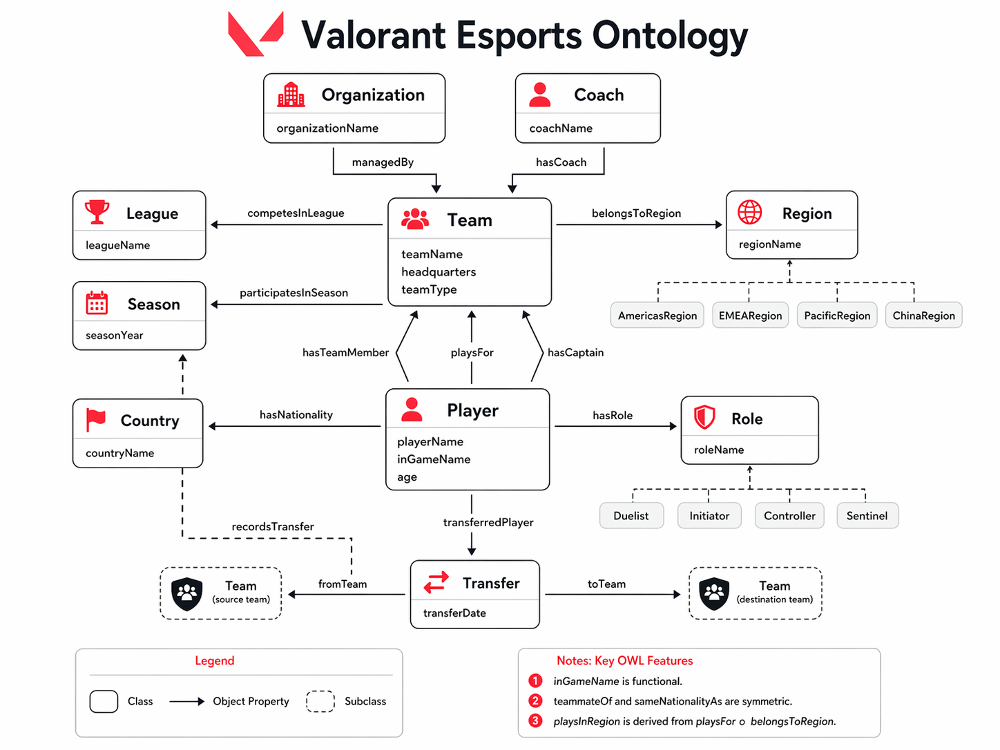

玩家 身份
// 先是玩家，才是从业者
Ascendant 1
Diamond 3
Elite · 季后赛参赛
英国高校电竞联赛
参与 Premier 与高校联赛让我真正接触到队内训练、赛前协作与参赛需求： 沟通成本、临阵换人、赛前信息同步——这些在选手管理岗位上每天都会遇到的问题， 我是以队伍成员的身份先经历过一遍的。
赛事 现场
北京无畏巡回 伦敦大师赛
现场观看北京无畏巡回季后赛与无畏契约伦敦大师赛全场次。 去现场对我而言不只是看比赛，而是带着「如果是我来导演，现场如何呈现」的问题在看。
- 观察 01队伍及选手入退场节奏
- 观察 02赛事流程与节目衔接
- 观察 03观众动线与场馆分区
- 观察 04观众互动设计
- 观察 05商业化呈现方式
玩家 社群
线下观赛组织 + 应援周边
伦敦大师赛期间组织当地玩家线下观赛，并自行设计制作应援周边。 从场地、人数、时间点到物料，全部由自己拆解并落地—— 这是一次小型但完整的"活动策划到执行"闭环。
玩家互动设计与现场秩序
参与《无畏契约》/《守望先锋》ONLY 活动的玩家互动设计与现场秩序配合， 了解同人向活动中玩家的真实期待，以及如何在有限人力下维持现场体验。
研究 与数据
VCT 电竞语义网
在 UCL 数字人文课程项目中独立设计《无畏契约》选手与俱乐部的语义网（Ontology）： 在图数据库中录入选手信息，把联盟架构、战队归属、选手转会关系结构化， 使"谁在哪支队、什么时候转会、隶属哪个赛区"成为可查询的数据而不是散落的新闻。

点击放大中国市场本地化研究
硕士论文研究《无畏契约》在中国市场的语言、文化与技术本地化； 另有课程研究对比 SDL Trados 与 MemoQ 在游戏更新公告本地化中的适用性。 这让我在面对跨区内容与国际赛事沟通时，天然带着"两边语境如何对齐"的意识。
我能 带来什么
不用被科普的队伍视角
熟悉 VCT 赛事体系、队伍结构与选手参赛流程。沟通选手、教练、俱乐部时不需要从零解释规则与生态。
把方案落到执行台本
KPL 十周年庆典策划中负责红毯与表演赛方案，输出创意方案、流程表、选手动线与舞台执行需求，并推进多轮跨部门优化。
国际赛事的双语底座
英语专业八级 + 会议口译与双语主持经验，长期在英国生活学习。跨区赛事、外籍选手与海外合作方沟通无障碍。